アルゴリズム
本ドキュメントではマルチモーダルLLMを用いたドキュメントのパースについて記述する。

ページ毎にテキストを抽出する
PDFパーサーで抽出したテキストや画像、図表をページ毎にマルチモーダルLLMに入力する。
ドキュメント種別の判別
ドキュメントのプロパティを取得し、テキストのみの場合は次のページの処理に進む。 判別に関しては画像を圧縮したうえで、マルチモーダルLLMによる判別を行う。 各プロパティに即したプロンプトを生成し、マルチモーダルLLMに入力する。
- 日本語テキスト
- グラフ
- テーブル
- 画像
プロンプトは以下に従う。
Analyze the input image and classify its content according to the following properties.
- **table**: Select if the image contains a table, such as a grid or matrix displaying structured data.
- **flowchart**: Select if the image contains a flowchart or diagram illustrating a process or sequence of steps.
- **graph**: Select if the image contains a graph, chart, or plot.
- **image**: Select if the image contains any other image except for tables and graphs.
- **ja_text**: Select if the image contains any Japanese text, even if other elements are also present.
- **text**: Select if the image contains any text, even if other elements are also present.
# Steps
1. Analyze the input image to identify all content types present.
2. For each property(**table**, **flowchart**, **graph**, **image**, **ja_text**, **text**), select all that apply.
コンテキストとメタ情報
ドキュメントのメタ情報と前ページまでのコンテキストを取得し、マルチモーダルLLMに入力する。 コンテキストはページを読み進めるごとに更新する。
Based on the provided context and new information, update the context to include relevant information.
# Constraints
- List any requirements, prerequisites, or action items extracted from new information, as they may be necessary for further pages.
- New information is provided by user input.
- Maintain the context with 5-7 bullet points.
# Context
{context}
ページのテキスト抽出
コンテキスト情報とページをラフに読み取ったテキストをマルチモーダルLLMに入力する。
You are an expert in reading documents from images.
Please write out the content accurately, staying faithful to the given image content.
# Constraints
- User will input the sentence. Please modify the sentence to make it more accurate.
- Don't hallucinate the content that doesn't exist in the image.
- Document context is provided for reference.
- Transcribe accurately, staying true to the image content and language.
# Document Type
## Text Information
- Please describe the all texts in this documents.
{document_type_prompt} // ドキュメントの種別に応じたプロンプト
# Document Context
{context}